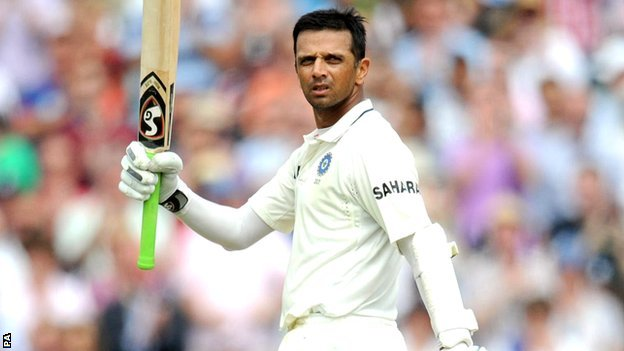

09 March 2012 Last Updated at 08:00 PM
Rahul Dravid:The Wall Of India Retires...!
Rahul Dravid was probably one of the last classical Test match batsmen. His progress into the national side may have been steady and methodical rather than meteoric, but once there, Dravid established himself at the vanguard of a new, defiant generation that were no longer easybeats away from home. Armed with an orthodox technique drilled into him by Keki Tarapore, he became the cement that held the foundations firm while the flair players expressed themselves. Yet, for a man quickly stereotyped as one-paced and one-dimensional, he too could stroke the ball around when the mood struck him.
- Rahul Dravid-Wikipedia
- Records Set By Rahul Dravid
- Awards And Achievements By Rahul Dravid
- Rahul Dravid's Retirement Speech